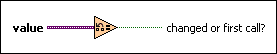

Is Value Changed VI
Owning Palette: Comparison Functions
Requires: Base Development System
Returns TRUE if this is the first call of this VI or if the input value is different from the value when this VI was last called.

 Add to the block diagram Add to the block diagram |
 Find on the palette Find on the palette |